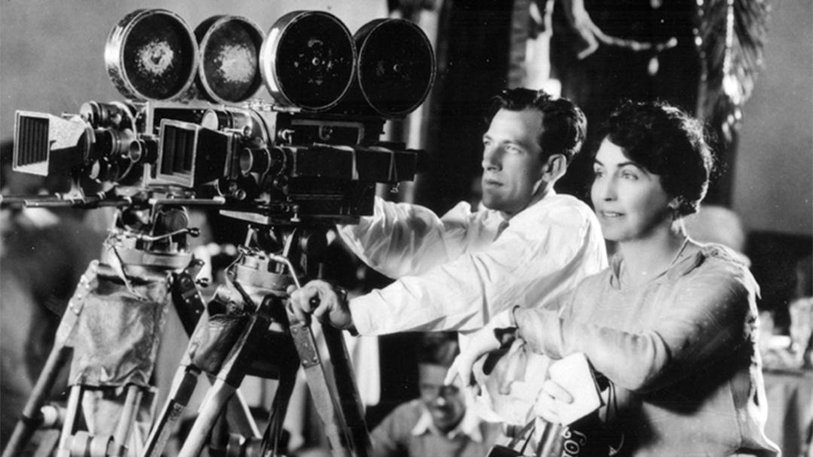

1895 - 1910

The beginning of the film industry!!
The Pioneer Era is where it all begins. Back when filmmakers had very simple gear and equipment to work with to produce films they had zero experience making. It wasn't easy in the beginning but filmmakers began by creating film reels that focused on news' recordings, documentaries,
and stage plays.
Between the years of 1900 and 1906, new film techniques had been developed. This included stop motion, painted backdrops, inverted shots,
variable camera speeds, and animation. During this era of film history, film grammar also continued to be developed such as film continuity,
points of view, women acting, and chase sequences.